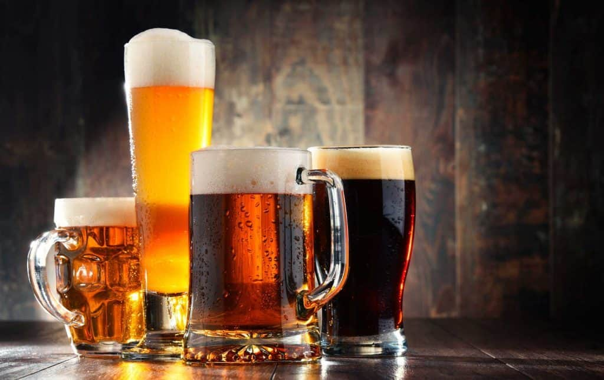
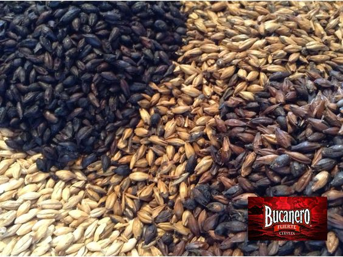
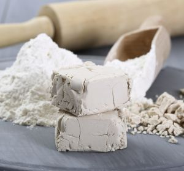
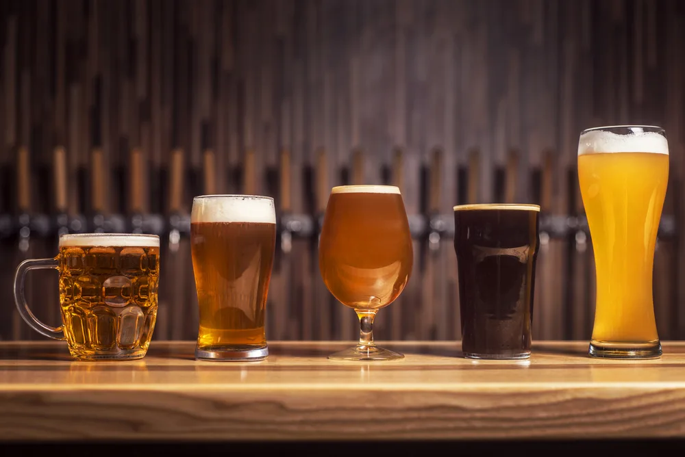
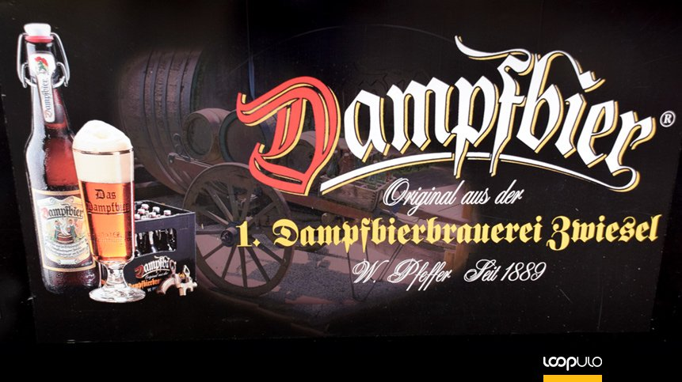
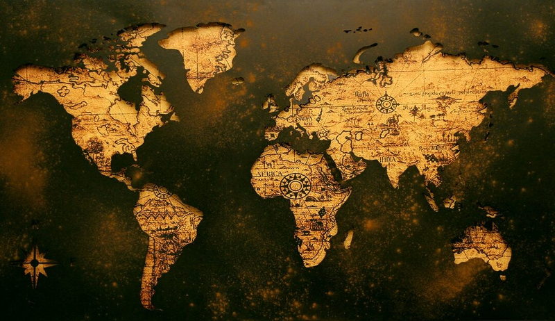
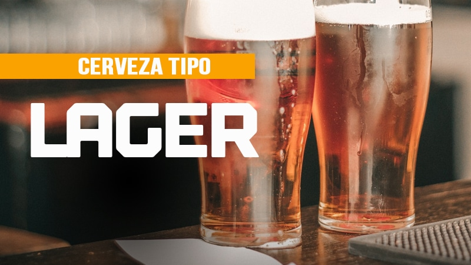
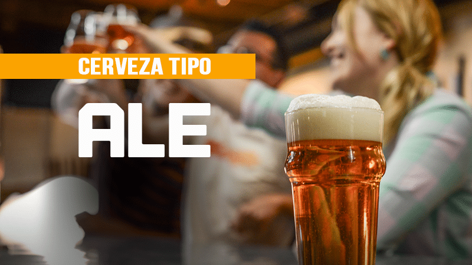

Bibliografía de imagenes y enlaces.
Cabecera:
- Nombre de la web: NeoDrinks.
- Articulo: 5 variedades de cerveza novedosas para brindar por el 2020.
- Url: neodrinks.com/variedades-de-cerveza/

Página de Portada:
- Nombre de la web: La roussecocina.
- Articulo: ¿La cerveza se toma fría?
- Url: laroussecocina.mx/nota/la-cerveza-se-toma-helada-3/

Página de Categoría:
- Nombre de la web: Wikipedia.
- Articulo: Cerveza.
- Url: es.wikipedia.org/wiki/Cerveza
- Nombre de la web: Wikipedia.
- Articulo: Cerveza.
- Url: es.wikipedia.org/wiki/Cerveza
.jpg)
- Nombre de la web: Webconsultas.
- Articulo: La cerveza, ¿es saludable?
- Url: www.webconsultas.com/dieta-y-nutricion/alimentos-saludables/componentes-de-la-cerveza

Páginas de detalles:
- Pagina de detalle: Ingredientes.
- Nombre de la web: Hacer Cerveza Artesanal.
- Articulo: Ingredientes de la cerveza artesanal.
- Url: hacercervezaartesanal.com/ingredientes-cerveza-artesanal

- Pagina de detalle: Ingredientes.
- Nombre de la web: AceGif.com.
- Articulo: Agua en imagen GIF aimada
- Url: https://acegif.com/es/gifs-de-agua/

- Pagina de detalle: Ingredientes.
- Nombre de la web: Pinterest.
- Articulo: Ingredientes de la cerveza artesanal: Malta.
- Url: pinterest.es/pin/91831279883598770/

- Pagina de detalle: Ingredientes.
- Nombre de la web: Pinterest.
- Articulo: Ingredientes de la cerveza artesanal: Lúpulo.
- Url: pinterest.es/pin/299137600258895535/

- Pagina de detalle: Ingredientes.
- Nombre de la web: Pinterest.
- Articulo: Ingredientes de la cerveza artesanal: Levadura.
- Url: pinterest.es/pin/15340454966813141/

- Pagina de detalle: Aspecto.
- Nombre de la web: Cientisol.
- Articulo: Medición del color con UV-VIS en la fabricación de cerveza.
- Url: http://www.cientisol.com/blog/148-medicion-del-color-con-uv-vis-en-la-fabricacion-de-cerveza

- Pagina de detalle: Aspecto.
- Nombre de la web: SobreColores.
- Articulo: El color de la cerveza Parte II.
- Url: https://sobrecolores.blogspot.com/2010/02/el-color-de-la-cerveza-parte-ii.html

- Pagina de detalle: Aspecto.
- Nombre de la web: AgroMagazine.
- Articulo: Cata científica de cerveza: descubriendo matices y sabores.
- Url: https://agromagazine.com/gastronomia/cata-cientifica-de-cerveza-descubriendo-matices-y-sabores/

- Pagina de detalle: Procedimiento.
- Nombre de la web: Viva la Chela.
- Articulo: Elaboración de cerveza.
- Url: vivalachela.mx/cultura-cervecera/basicos-de-la-cerveza/elaboracion-de-cerveza/

- Pagina de detalle: Aspecto.
- Nombre de la web: Top cervezas.
- Articulo: Cerveza ahumada rauchbier Schlenkerla.
- Url: https://www.topcervezas.com/cerveza-ahumada-rauchbier-schlenkerla/

- Pagina de detalle: Aspecto.
- Nombre de la web: loopulo.
- Articulo: Sparkling Ale y otros estilos de cerveza olvidados.
- Url: https://loopulo.com/estilos-de-cerveza/sparkling-ale-estilos-olvidados/

- Pagina de detalle: Procedencia o denominación de origen.
- Nombre de la web: Enigmatic.
- Articulo: Los 10 principales países productores de cerveza del mundo.
- Url: enigmaltic.com/datos-curiosos/los-10-principales-paises-productores-de-cerveza-del-mundo/

- Pagina de detalle: Graduación.
- Nombre de la web: Cerveza Grün Bauch (facebook).
- Articulo: Introducción de la cerveza.
- Fuente: Programa de Certificación CICERONE 2018.
- Url: facebook.com/cervezagrunbauch/posts/1591331937684983/
- Imagen vinculada a la web Cerveza Grün Bauch (facebook)

- Pagina de detalle: Graduación.
- Nombre de la web: Che!Cerveza.
- Articulo: Cervezas tipo Lager.
- Url: https://checerveza.com/tipo-lager/

- Pagina de detalle: Graduación.
- Nombre de la web: Che!Cerveza.
- Articulo: Cervezas tipo Ale.
- Url: https://checerveza.com/tipo-ale/

Página de Enlaces:
- Nombre de la web: Flaticon.
- Autor: Good Ware.
- Url: https://www.flaticon.com/free-icon/beer_761767?term=beer&page=1&position=7&page=1&position=7&related_id=761767&origin=tag
- ¿sabes qué es un Favicon y cómo se añade a un proyecto web? www.flaticon.com